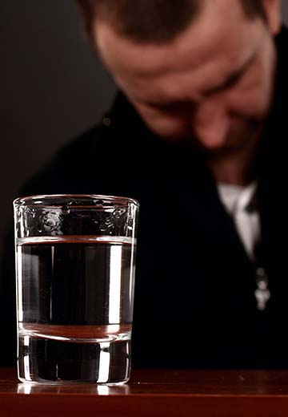
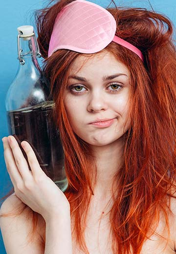

В последнее десятилетие отмечается стремительный рост потребления спиртных напитков всеми категориями населения. Проблема алкоголизма в России время от времени утихает, но вновь встает в полный рост. Увеличивается количество людей, у которых на почве злоупотребления спиртным возникают психические расстройства, депрессии и суицидальные попытки. У пьяных родителей рождаются дети, имеющие врожденные патологии и нарушения нервной системы. Больше 80% убийств, совершаемых в России, происходят в нетрезвом виде.
История пьянства в России
До XVII века русские люди не знали, что такое крепкий алкоголь. Медовуха, пиво и квас – самые распространенные хмельные напитки, которые выставлялись на стол только по праздникам. Вино, завозимое из Византии, употреблялось только в сильно разведенном виде. Еще с конца XIV века началось производство хлебной водки, но из-за дороговизны крепкий напиток был доступен только богатой части населения.
Уверенность иностранцев, что национальная традиция России – повальное пьянство, пошла от другого русского обычая – гостеприимства. Заморских визитеров размещали в отдельных слободах, где накрывались обильные столы с большим количеством разнообразного алкоголя. Иностранцы пребывали в уверенности, что подобные застолья – обычное дело для Руси, и рассказывали об этом по возвращении домой. Миф о русской водке жив уже более трех столетий.
На самом деле алкоголизация населения началась в конце XVI века, при царе Иване Грозном. Именно оттуда идет государственная заинтересованность в большом употреблении спиртного населением. Все водочные заводы были монополизированы, цена на алкогольную продукцию была немалой и выручка шла в казну. По всей Руси начали строить питейные кабаки для простолюдинов, где можно было напиться, но закуски не предусматривалось. Отсюда – быстрое опьянение и похмелье на следующий день, которое снова заставляло идти в кабак за новой порцией водки. Интерес царевой казны был поставлен выше трезвого образа жизни.
Почему пили и пьют русские люди
Начиная с XVII-XVIII веков в стране происходит алкоголизация населения. В законах того времени нет никаких намеков на наказание за беспросветное пьянство, не порицается такая привычка обществом. Пить много и часто становится действительно национальной традицией. Русский человек не ограничивается бокалом вина за приятным ужином. Бутылка становится жестом гостеприимства – ни один праздничный стол или встреча друзей не обходятся без богатого ассортимента спиртного. Само понятие совместного распития становится синонимом хорошего настроения, дружбы, радости от встречи. Лояльное отношение к выпивке формируется в семье начиная с раннего детства.
Причины высокого алкопотребления в России можно классифицировать на:
- Социальные – условности и традиции общества, недостаток мест культурного и здорового отдыха, подспудное навязывание красивого образа жизни в СМИ, кинофильмах. Сюда же относятся экономическая и политическая ситуация в стране.
- Психологические – попытка уйти от реальных проблем, личной неустроенности, одиночества. Недостаток общения и коммуникативные трудности приводят человека к бутылке. Особенно актуально такое отношение к распитию в начальной стадии зависимости, когда несколько порций алкоголя приносят расслабленность и эйфорию.
- Физиологические – алкоголизм может быть генетически обусловленным. В 99% случае у пьющей матери вырастет ребенок, склонный к деструктивному поведению и употреблению спиртных напитков или наркотиков. Люди с психическими нарушениями и неврозами чаще всего пьют, чтобы избавиться от депрессии и гнетущего состояния.
Чаще всего повышенная тяга к алкоголю объясняется жизненными ситуациями, которые вполне решаемы без водки. Но человеку бывает проще напиться и уйти в алкогольную нирвану, нежели прилагать усилия для разрешения насущных проблем. Мнимое ощущение безопасности и душевного комфорта, которое наступает после нескольких рюмок водки – механизм возникновения алкогольной зависимости.

Опасность алкоголизма
Всякий спиртной напиток содержит этанол. Действие токсического вещества на организм губительно, под удар попадают все жизненно важные органы и системы. Чем больше и чаще человек прикладывается к бутылке, тем сильнее разрушения и тяжелее последствия.
Разовая доза алкоголя, от которой можно умереть, составляет от 4-12г на килограмм веса человека. В пересчете на чистый спирт это составляет 300 мл. Однако случаи смертельного отравления алкоголем при однократном приеме встречаются реже, чем систематическое употребление 300-400 мл вина или 100-150 мл крепкого напитка.
Актуальный показатель смертности по итогам 2020 года составил 2,4% от общего числа летальных исходов, это больше 50 тысяч человек. В приведенной статистике не учтены случаи, когда люди умирают после тяжелых заболеваний, вызванных многолетней приверженностью вредной привычке. По данным Минздрава, общий процент смертей, связанных с алкоголем, включая несчастные случаи и ДТП, превышает 50%.
В национальном масштабе опасность повышенного алкопотребления заключается в следующем:
- Повышение уровня преступности – в 80% случаев убийства совершаются из-за пьянства, среди других нарушений закона доля уголовных проступков колеблется от 30% до 60%.
- Мнимое и реальное сиротство – половина детей, воспитывающихся в детских домах и приемных семьях, лишились кровных родителей по причинам, связанным со злоупотреблением алкоголем.
- Ухудшение демографической обстановки – от водки гибнет трудоспособное население в возрасте до 60 лет. По прогнозам ООН, население России к 2050 году может снизиться на 22 миллиона человек.
- Экономические потери государства – более 700 млрд. руб. в год тратит бюджет на лечение и выплаты по нетрудоспособности алкозависимых, социальные пособия детям по утрате кормильца и прочие меры господдержки. Потери федерального бюджета составляют до 5% от ВВП.
По мнению социологов, резкое ухудшение уровня жизни обычных людей и поляризация граждан по доходам после реформ 90-х годов вызвали всплеск потребления спиртного. В 2008 году на душу населения было выпито более 16 литров чистого спирта.
Как развивается алкоголизм в России сегодня
Официальная статистика Минздрава гласит, что начиная с 2011 года, когда на каждого россиянина пришлось 18 л этанола, к 2018 году употребление горячительных напитков снизилось почти вдвое – до 9,3 л. Но по данным экспертов ООН, озвученная цифра снижена вдвое, и, например, в 2016 году на душу населения приходилось до 20 л чистого спирта.
В официальный показатель входит только тот алкоголь, купленный в магазине. Если добавить сюда суррогат и самогон, аптечные настойки и спиртное, ввезенное из-за границы, то статистика Минздрава и Росстата сопоставится с данными мировых экспертов.
Исследование по регионам за 2020 год выявило закономерность: чем дальше от центра находится город, тем больше спиртного выпивают люди. Если в Москве на каждого жителя приходится 7,5л в год, то в северной глубинке этот показатель достигает 20л. Наименьшее употребление алкоголя зафиксировано в северо-кавказских регионах – Ингушетии, Дагестане, Чечне. По сравнению с мировым сообществом Россия в 2020 году заняла 16 место с потреблением 11,7 чистого спирта.
Специалисты ВОЗ посчитали, что только прямые потери от роста пьянства в России составили 5 трлн. руб. в год. Но в эту сумму вошли только издержки от потерь производительности труда, лечение посталкогольных болезней, содержание преступников, оказавшихся в тюрьмах из-за водки. Точно подсчитать финансовые убытки государства от алкоголизации населения невозможно, поскольку вред и последствия от пьянства могут проявиться через несколько лет.
Наиболее часто алкозависимостью страдают люди в возрасте 16-45 лет. До преклонного возраста аддикты или не доживают, или приобретают тяжелые болезни, когда пить нельзя.
Гендерный вопрос: кто в группе повышенного риска
В обществе принято считать, что мужской пол наиболее подвержен алкоголизму. Но последнее десятилетие внесло коррективы в устоявшееся мнение. Женский алкоголизм стал встречаться гораздо чаще, а первый глоток пива или вина пробуют дети, начиная с 11 лет. Тенденция к повышению числа пьющих женщин и подростков может привести к тому, что следующее поколение родится нездоровым, а тяга к спиртному будет проявляться еще раньше.
Алкозависимость у мужчин
Мужчины начинают пить чаще всего из-за социальных и психологических факторов. Они не всегда способны адаптироваться к внешним условиям, изменениям в собственной жизни. Сильному полу оказывается сложнее преодолеть возникшие проблемы, проще погрузиться в алкогольный туман и временно уйти от трудностей.
Склонность к систематическому пьянству чаще всего проявляется у людей, имеющих следующие особенности характера:
- низкий уровень самоконтроля;
- эмоциональная неуравновешенность;
- наличие комплексов;
- слабая мотивация на приобретение хорошего образования и престижной работы;
- пониженная самооценка.
В начале алкогольного марафона мужчина принимает спиртное для придания себе уверенности в собственных силах, повышения настроения. Но по мере привыкания стремление выпить довлеет над иными потребностями, увеличивается толерантность – человеку требуется больше выпивки, чтобы почувствовать себя счастливым.
Постепенно мужчина обретает внешние и внутренние признаки, характерные для алкоголика:
- отрицание проблемы;
- постоянная ложь и поиск оправданий по поводу факта употребления спиртного;
- нарушение памяти;
- появление абстиненции;
- безразличие к собственной внешности и мнению окружающих.
С медицинской стороны у мужчины наблюдаются серьезные нарушения – плохо функционируют почки и печень, страдает сердце и система кровообращения. Если вовремя не признать болезнь и не начать лечение алкоголизма, человек за несколько лет может превратиться в асоциальную личность с букетом хронических болезней.
Зависимость от спиртного реже формируется у людей с высоким социальным статусом. Нежелание потерять хорошую работу и свое положение в обществе может уберечь мужчину от злоупотребления алкоголем.

Женское пьянство
Алкоголизм у женщин имеет более тяжелые последствия по сравнению с мужским полом. Девушки в большинстве случаев начинают выпивать слабоалкогольные напитки или пиво по следующим причинам:
- окружение, склонное к злоупотреблению;
- неумение сказать нет друзьям;
- отсутствие других развлечений или занятий;
- желание отвлечься от реальных неприятностей.
Женщины, имеющие в семье мужа-алкоголика, часто видят свою поддержку, как совместное распитие. В результате у женского пола быстрее развивается привыкание к спиртным напиткам и ежевечерний один бокал пива быстро переходит в стадию, когда прием дозы любого алкоголя нужен уже с утра.
В женском организме значительно меньше ферментов, отвечающих за расщепление этанола. По этой причине спирт и продукты его распада накапливаются в тканях и внутренних органах. Гематоэнцефалический барьер у женщин устроен таким образом, что молекулы спирта с кровотоком быстро проникают в головной мозг. Перечисленные физиологические факторы приводят к быстрому формированию физической зависимости от алкоголя.
Для полного излечения женщины от алкоголизма потребуется осознанное желание самой пациентки и немалые усилия наркологов и психологов, в том числе кодирование от алкоголизма.
Общество крайне негативно относится к женскому пьянству, даже близкие люди вместо поддержки порицают мать или жену. Такое отношение способно уронить самооценку и разрушить малейшее стремление к трезвой жизни.
Подростковый алкоголизм
Раннее развитие пристрастия к спиртному стало распространяться в течение последних лет. По данным социологических опросов, среди факторов, ведущих к подростковому пьянству, выделяются:
- природное любопытство;
- способ консолидации со сверстниками;
- несформированный самоконтроль;
- желание повысить собственный статус;
- уход от конфликтов и депрессивного настроения.
Употребление алкоголя для подростка чаще всего связан с окружением. В неблагополучной компании школьник может впервые выпить наравне со всеми, чтобы не выделяться, а в нормальных условиях способен вести трезвую жизнь.
При этом у детей быстро формируется физическая зависимость от пива или коктейлей. Путь от обычного школьника до хронического алкоголика подросток проходит за 2-3 года. У систематически пьющих молодых людей наблюдаются следующие последствия злоупотребления:
- остановка физического и психического развития;
- психические нарушения;
- раскоординация нервной системы;
- деградация личности.
Особенность современного подросткового алкоголизма – в полном стирании половых различий. Мальчики и девочки с одинаковой вероятностью станут алкоголиками, начиная выпивать с 12-13 лет. В результате молодых людей ожидает разрушенное здоровье, нарушение репродуктивной функции, развитие психопатологии. Главной угрозой ранней алкогольной зависимости является возможное употребление наркотиков.
Остановить формирование алкогольной зависимости в пубертатном периоде можно только при комплексной помощи врачей-наркологов и психотерапевтов. Самостоятельные усилия практически всегда обречены на провал.
Трезвость или пьянство: что победит
Российская история знает несколько периодов жесткой антиалкогольной борьбы. Вводились жесткие ограничения и запреты по продаже спиртного, вырубались виноградники, сокращалось производство вина и водки. Мероприятия по искоренению пьянства приносили временный эффект, увеличивалось употребление суррогатов и самогона.
С 2009 года Правительством РФ разработана Концепция по снижению уровня алкоголизма, нацеленная на плавное уменьшение алкопотребления. Согласно этой программы, в 2020 году планировалось довести уровень спиртного до 8 л чистого спирта в год на душу населения.
Законодательные акты не всегда приносят желаемый результат. Для того чтобы население России обрело привычку трезвого образа жизни, необходимо вести интенсивную профилактическую работу. Кроме ограничения времени продажи спиртосодержащей продукции, запрета рекламы пива и постепенного увеличения розничных цен на алкоголь, необходимо развивать культурную и спортивную сферу.
Особенно важно это для подрастающего поколения – молодые люди, имеющие серьезные увлечения, не будут искать развлечений в пьяной компании. Улучшение экономической ситуации в стране, повышение ценности образования и саморазвития – факторы, способные уменьшить количество россиян, имеющих зависимость от алкоголя и сохранить здоровье нации.